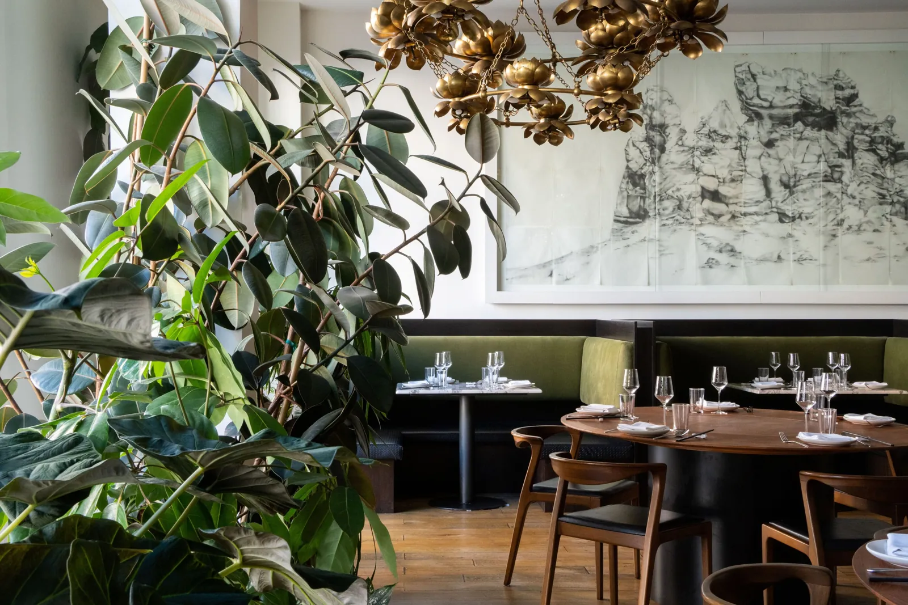
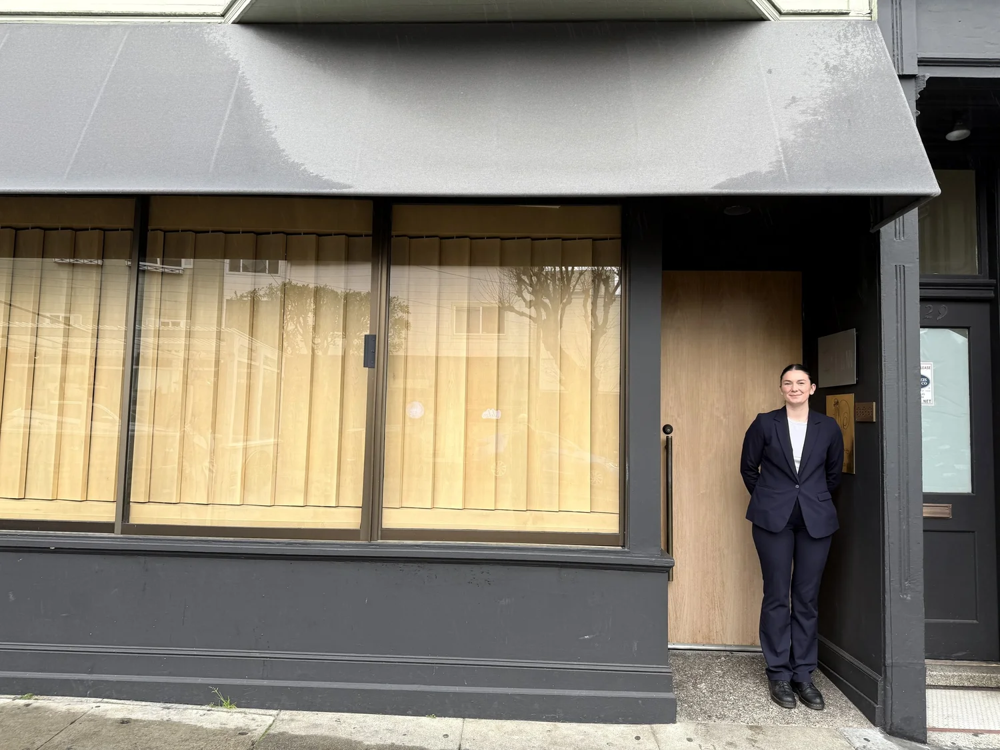
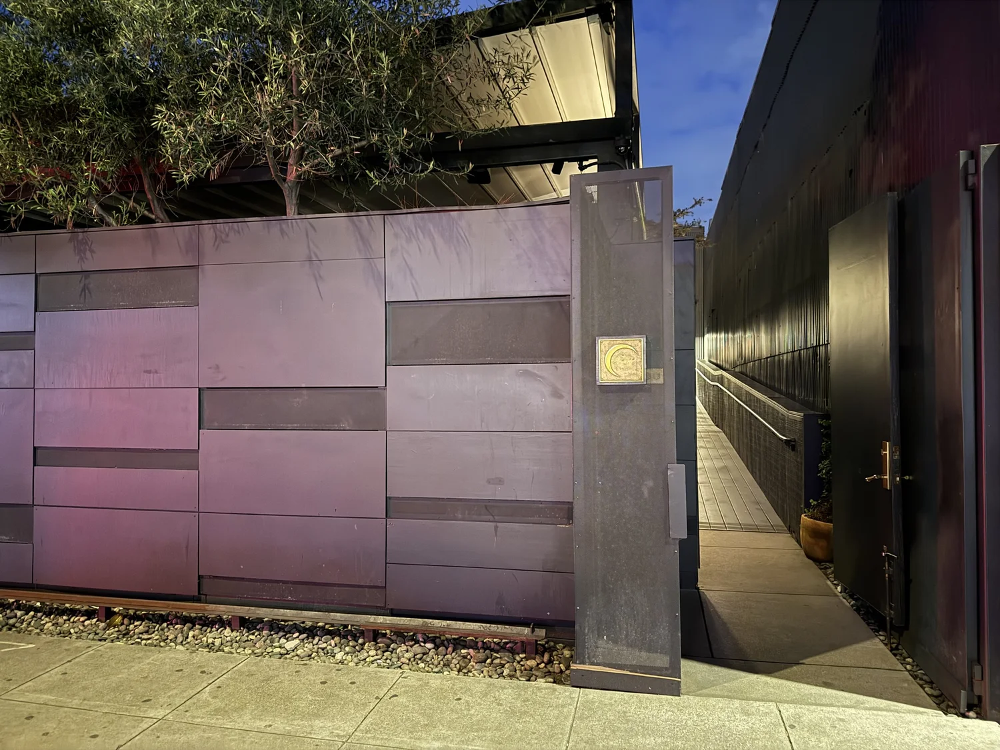
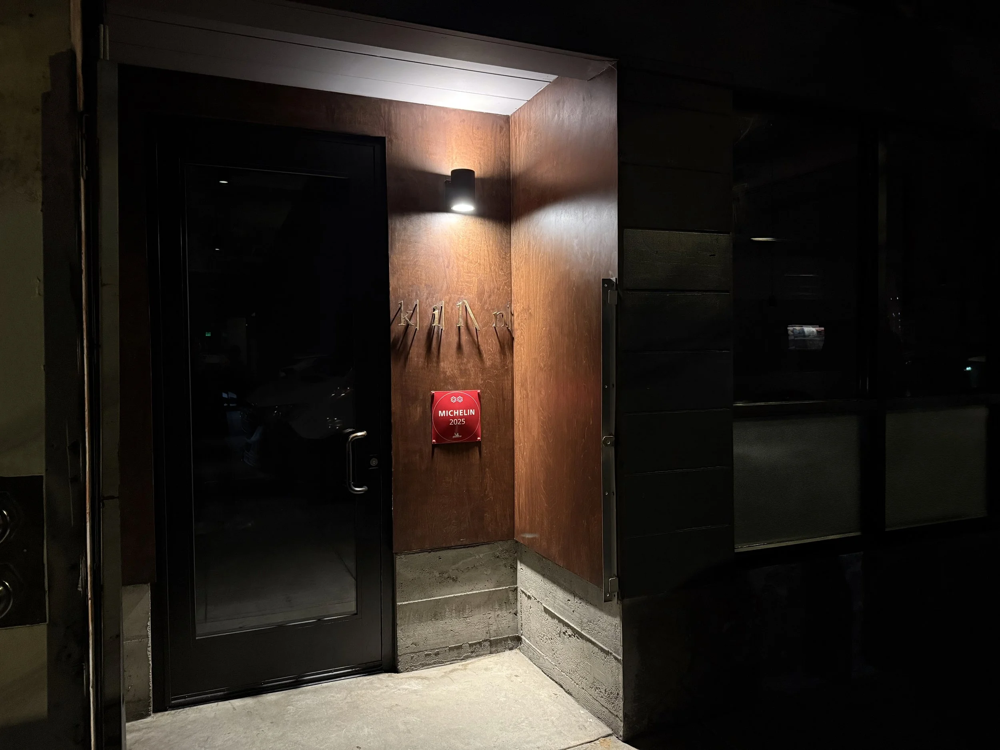

SF's 10 Michelin-starred restaurants cluster into five neighbourhood bands — SoMa, Hayes Valley, Mission, Cow Hollow, and Jackson Square — and each band generates a different daytime itinerary for the hours before the reservation. [1]
A SoMa dinner sits five blocks from SFMOMA and an easy walk to the Embarcadero. Atelier Crenn in Cow Hollow is walking distance from the Palace of Fine Arts and Crissy Field. Kiln in Hayes Valley is three blocks from Davies Symphony Hall.
The sharpest contradiction the research surfaces: SF's fine-dining scene is globally competitive — Californios is the first Mexican restaurant in the US to earn two Michelin stars [1] — yet the best free activities sit within 20 minutes of every starred restaurant.

Californios
- SFMOMA (5 blocks)
- Embarcadero waterfront
- Ferry Building market
- Davies Symphony Hall
- Patricia's Green park
- Boutique shopping strip
Sons & Daughters
- Mission Dolores Park
- Clarion Alley murals
- Valencia St. cafés
- Palace of Fine Arts
- Crissy Field walk
- Fort Mason waterfront
- Transamerica Pyramid
- North Beach espresso
- Coit Tower murals


| Conference | Dates 2026 | Attendees | Impact |
|---|---|---|---|
| RSA Conference | Mar 23–26 | 50,000+ | High — SoMa saturation |
| AI Engineer World's Fair | Jun 29–Jul 2 | 6,000+ | Moderate — Moscone West |
| Dreamforce | Sep 15–17 | 140,000+ | Severe — citywide surge |
"The highest-cost and zero-cost parts of the weekend coexist— Research Synthesis · Atlas, June 2026
in unusually tight geography. There's no need to choose."